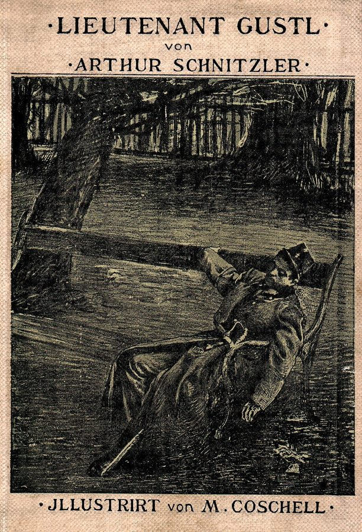
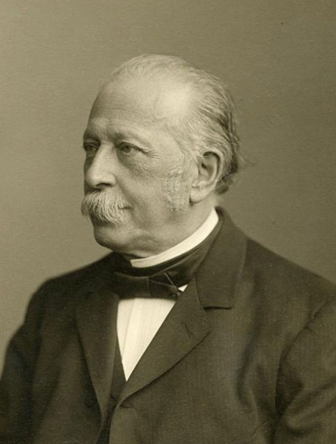
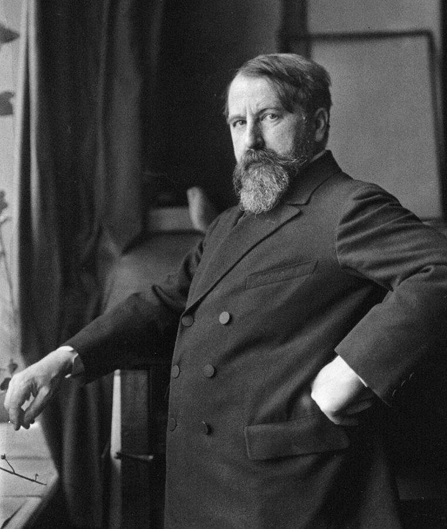
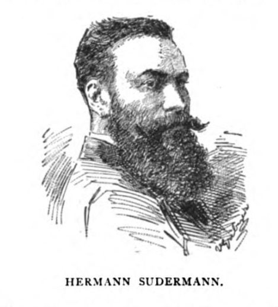
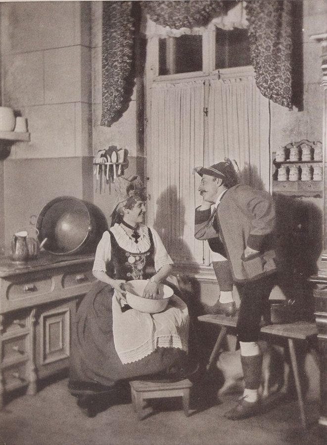

这一页在做什么
这一页四节，讲四个故事：冯塔纳笔下的普鲁士骑兵上尉，施尼茨勒笔下的维也纳少尉，马尔克斯笔下的哥伦比亚村子，还有桑德拉尔小时候在那不勒斯看到的一场行刑。前三个故事里，给人定期限的是荣誉；最后一个故事里，是一台照相机。作者一路数时间：九个月、一夜、一个早上、一刻钟，也一路问这段时间由谁来定。读的时候抓两条线：荣誉怎样逼出期限、又怎样过时；媒体的时间怎样压过真实的时间。

《古斯特少尉》1901 年的初版封面，插画是 M. Coschell 画的：一个军官歪在公园的长椅上睡着了，正是第 70 段那一幕。封面上的拼法是当年的 Lieutenant。Moritz Coschell，公有领域，维基共享资源 读之前：这一页在全书的哪里
上一页（09a ）的期限来自魔鬼、暴君和债主，关乎性命和欠款。这一页换成荣誉：§5–§7 三个荣誉故事，期限一个比一个短；§7 开头作者插了一段话，说荣誉的时代在十九世纪末就过去了。§8 换到媒体：一场行刑为了拍照推迟了一刻钟。和前面能对上的有两处：第 83 段桑德拉尔引富兰克林的「时间就是金钱」（富兰克林见第 3 章）；第 89 段作者自己拿席勒的《人质》（09a）作对照。
荣誉、舆论、一张照片，这些看不见摸不着的东西，怎样给一个人的生命定下期限？这段时间由谁掌管？
读的时候带着这几个问题。不用先找答案，读完回来对照「检查一下理解」。
冯塔纳的故事里，期限一个个都守住了，作者为什么还说保住的只是「虚假的荣誉」？这话是谁先看穿的？§5
古斯特少尉在公园里过的那一夜，和你读这篇小说花的时间，有什么关系？§6
全村都知道要出人命，为什么没人拦住？作者说的「时间单一」指什么，反讽在哪里？§7
行刑推迟一刻钟，责任算在谁头上？作者为什么说这里预告了一个新时代？§8
这一页的路线
四节是四个独立的故事，作者几乎不在节与节之间搭桥：每节先交代作家和作品，再顺着情节数时间。前两节是一对：都是军官，都是荣誉，出路都是「对着自己的头开一枪」，一个开了，一个没开。第 7 节开头的第 73 段是插话：作者从故事里抬起头，说荣誉的时代在十九世纪末已经结束，紧接着却讲一个二十世纪的荣誉故事，用「把时钟往回拨」来圆。这一节最长，第 77 段起作者学书里的叙述者，逐小时、逐分钟地核对时间。第 8 节突然换题：没有荣誉，只有一个照相师。第 87、88 段是桑德拉尔原文的一大段英法对照，可以当作一组连拍来看，第 89 段起作者才开始评。
§5
§6
§7
§8
荣誉的期限
媒体的时间
冯塔纳 九个月
施尼茨勒 一夜
苏德曼 插话
马尔克斯 一个早上
桑德拉尔 推迟一刻钟
本站示意图。蓝点是荣誉这条线，橙点是媒体那条线，绿色小点是第 73 段的插话；点下面是故事里那段期限有多长，折线是阅读顺序，虚线分开四节。 作者落在哪： 作者不替荣誉下判断，只借小说里的人说：守住期限保住的是虚假的荣誉，荣誉只活在别人眼里。最后两节他落在两处：一部小说就是当年来不及送到的警告；为一张照片，死亡可以等一刻钟，社会的权力终将落到媒体手里。
分节地图
这一页是原书第 9 章的第 5–8 节。粗体是这一节的主角；斜体是英文这一节开头的几个词，在电子书里搜它就能跳到那里；节里的转折用段号点出来。读完打个勾。
冯塔纳《舍赫·冯·乌特诺》：婚礼当天的一枪约 1000 词 The Prussian author Theodor Fontane's tale … 九个月的倒数和一道最后通牒。第 58、60 段是两处耽搁，第 62 段收在「虚假的荣誉」。 施尼茨勒《古斯特少尉》：维也纳的一夜约 1200 词 As an imperial officer, Second Lieutenant … 第 63 段给「荣誉的期限」下定义；第 70 段算叙述时间和醒着的时间。 苏德曼一句话；马尔克斯《一桩事先张扬的凶杀案》约 1600 词 At the end of the nineteenth … 第 73 段是插话：荣誉的时代结束了。第 77 段起逐小时、逐分钟数时间。 桑德拉尔《漂泊》：为拍照推迟的行刑约 1400 词 Blaise Cendrars (1887-1961), born Frederic … 第 87、88 段是桑德拉尔的英法对照长引文，第 89 段起才是作者的评论。
先用中文过一遍：这一页的概念
作者常常一笔带过、默认你懂的概念，这里先从书外讲一遍：它从哪来，是什么意思。它在这一页起什么作用，看每块最后一句。讲过的概念都汇总在概念汇总 。这一页的期限，就是期限（Frist） 那个概念：一段有起点、有终点的时间。
§6 荣誉准则和「给个说法」 code of honor（Ehrenkodex），satisfaction（Satisfaktion） 十九世纪的德国和奥匈，军官、贵族、大学生社团里通行一套不成文的荣誉准则：受了侮辱，要当场回应，再要求对方「给个说法」（Satisfaktion），通常就是决斗。决斗打完，不论输赢，荣誉就算恢复了。关键是只有「有资格给说法」（satisfaktionsfähig）的人才能应战：军官、贵族、受过高等教育的人有这个资格，手艺人、仆役没有。被没有资格的人冒犯，就掉进死角：没有正当的办法洗刷。这套准则看的是别人知不知道，不是事实如何。好比一个只认公开记录的信用系统：没记下的违约，就不算违约。
在这一页： §6 第 63 段，作者把受辱到「给说法」之间那段时间叫作荣誉的期限；第 66 段面包师没资格应战，古斯特就卡住了。
§6 内心独白 internal monologue（monologue intérieur） 不经叙述者转述，直接把人物脑子里的念头原样摆出来：没有「他想」「他觉得」，句子跳跃、不完整，跟着联想走。一般把法国作家杜雅尔丹（Édouard Dujardin）1887 年的《月桂树已砍尽》算作第一部通篇用内心独白写的小说；乔伊斯《尤利西斯》（1922）的最后一章把它推到了极致。施尼茨勒的《古斯特少尉》（1900）常被看作德语文学里最早通篇用内心独白写成的小说之一。读这种文字，像看一个人实时滚动的日志：只有当下的念头，没有旁白替你总结。
在这一页： §6 第 68、69 段，古斯特一夜的念头就是这样写出来的；第 72 段末，他把内心独白说出了声。
§8 并列句法 parataxis（对 hypotaxis） 希腊文 para（旁边）加 taxis（排列）：把一个个分句并排摆着，用「和」或逗号连起来，不分主次，不说哪件是因、哪件是果。相对的是「主从句法」（hypotaxis）：用 because、although、after 把分句挂在主句下面，替读者排好逻辑。《圣经》的叙事多是并列句法，一句「和」接一句「和」。并列句法只给画面、不给评判，像一组按时间戳排好的连拍照片，因果要读者自己去连。
在这一页： §8 第 89 段，泰洛指出桑德拉尔那段文字用一连串「和」（et）串起分句，每个分句对应照相师的一张照片。
书里的人和作品
按在书里出现的顺序排，标题前是节号。作品只讲到读懂这一节需要的程度。
§5 冯塔纳和《舍赫·冯·乌特诺》
冯塔纳 Theodor Fontane，1819–1898 普鲁士作家，当过药剂师、记者和战地通讯员，将近六十岁才出第一部长篇，后来以《艾菲·布里斯特》出名。这一节讲他的一部中篇。
《舍赫·冯·乌特诺》（Schach von Wuthenow）1882 年在柏林的《福斯报》上连载，1883 年出单行本，副题说是「Gensdarmes 骑兵团时代的故事」。故事发生在 1806 年的柏林，那年秋天普鲁士在耶拿大败于拿破仑。第 54 段说有些研究者把它读成对普鲁士没落的历史批评，作者不反驳，只挑出时间这条线。小说最后两章是两封信，倒数第二章 Bülow 的信里痛斥的正是「虚假的荣誉」（falsche Ehre）：第 62 段说看得比主角清楚的「次要人物」，这是一位。

冯塔纳，Emil Bieber 1894 年拍摄（裁切过）。Emil Bieber，公有领域，维基共享资源 §6 施尼茨勒和《古斯特少尉》
施尼茨勒 Arthur Schnitzler，1862–1931 维也纳的医生和作家，写过剧本《轮舞》、小说《梦的故事》。这一节讲他的一篇小说。
《古斯特少尉》（书里写 Lieutenant Gustl，今天多拼作 Leutnant Gustl）1900 年 12 月 25 日登在维也纳《新自由报》的圣诞增刊上，第二年出单行本；书里没写年份。全篇是古斯特一个人的内心独白，从音乐会上的无聊开始，到第二天早上的咖啡馆结束。小说发表后，军方的荣誉法庭认定它损害了军队的荣誉，1901 年取消了施尼茨勒的后备军官身份：一篇讽刺荣誉准则的小说，让作者本人按荣誉准则受了罚。

施尼茨勒，约 1912 年，Ferdinand Schmutzer 拍摄。Ferdinand Schmutzer，公有领域，维基共享资源 §7 苏德曼和《荣誉》
苏德曼 Hermann Sudermann，1857–1928 生在东普鲁士的德国剧作家、小说家，自然主义时期的当红作者。第 73 段只借他剧里的一句话。
第 73 段印的是「Die Ehre, 1899」。这部剧其实 1889 年 11 月在柏林的莱辛剧院首演，是苏德曼的成名作，1899 是错的。剧里一位当过军官的伯爵心平气和地说：「说句私下话，根本就没有荣誉这回事。」作者把它当作荣誉时代的最后一句话。注 10 还列了作者自己 1971 年的文章《荣誉的神话》（Die Mythologie der Ehre）：荣誉这个题目，作者早年专门写过。

苏德曼像，刊在 1895 年 7 月纽约的《The Bookman》杂志上。作者不详，公有领域，维基共享资源 §7 马尔克斯和《一桩事先张扬的凶杀案》
马尔克斯 Gabriel García Márquez，1927–2014 哥伦比亚作家，《百年孤独》的作者，1982 年获诺贝尔文学奖。第 74 段写「b. 1927」，那时他还在世。
《一桩事先张扬的凶杀案》（Crónica de una muerte anunciada，1981）篇幅不长，取材于 1951 年哥伦比亚苏克雷（Sucre）的一桩真实凶杀案。书里的叙述者多年以后回到村子，像记者一样一个个找证人，把那天早上的时间一点点拼回来。小说第一句就告诉你主人公要被杀，悬念不在「会不会」，而在「为什么没人拦」。这部小说还在版权期内，本站不引它的原文。
马尔克斯晚年。Jose Lara，CC BY-SA 2.0，维基共享资源
§7 西班牙的「荣誉剧」第 76 段说，只看情节梗概，这就像洛佩·德·维加、卡尔德隆或蒂尔索·德·莫利纳的一出戏。三位都是西班牙「黄金世纪」（16–17 世纪）的剧作家。那时的舞台上有一类「荣誉剧」：妻子或姐妹一旦有了失贞的嫌疑，丈夫或兄弟就得用血洗刷，哪怕她是清白的；卡尔德隆的《医生治自己的名誉》（El médico de su honra）里，丈夫为了名誉暗中杀了妻子。作者说马尔克斯写的是一出「古典」的荣誉剧，把荣誉写成一股原始的力量。
洛佩·德·维加 Lope de Vega，1562–1635 西班牙剧作家，一生据说写了上千部剧。
卡尔德隆 Pedro Calderón de la Barca，1600–1681 西班牙剧作家，《人生如梦》的作者。
蒂尔索·德·莫利纳 Tirso de Molina，1579–1648 西班牙修士、剧作家，《塞维利亚的嘲弄者》第一次把唐璜搬上舞台。
§8 桑德拉尔和《漂泊》
桑德拉尔 Blaise Cendrars，1887–1961 生在瑞士拉绍德封（La Chaux-de-Fonds）的法语诗人、小说家，原名 Frédéric-Louis Sauser。
一战时桑德拉尔加入法国的外籍兵团，1915 年在香槟前线负伤，失去右臂，1916 年入了法国籍。此后周游各地，写诗、小说、游记和报道。《漂泊》（Bourlinguer，1948）是半自传、半虚构的札记；bourlinguer 原是航海的说法，口语里指四处闯荡，英译作 Globetrotting。行刑那一段写的是他童年在那不勒斯看到的事，照相师的名字 Ricordi 在意大利文里是「回忆」。桑德拉尔 1961 年才去世，作品还在版权期内。
§8 第 87、88 段那一大段写了什么这两段是同一段文字的英译和法文原文，没有标成引文，读者看到的是正文。本站只给大意：天刚亮、光线不够，照相师想等第一缕阳光再拍，请求推迟行刑，从要塞长官往下层层都同意了；一场枪决就这样晚了一刻钟。整段是一个一口气不断、用「和」串起来的长句。第 89 段引的泰洛（Jérôme Thélot）是法国的文学研究者，他 2003 年的书专讲摄影在文学里引出的新写法。

Alfred Naumann 1888 年用镁光拍的照片。那时还没有电子闪光灯，在暗处拍照要点燃镁粉，打出一道强光，墙上的深影就是它留下的。第 87 段的照相师用的就是这种镁光。与本书无关。Alfred Naumann，公有领域，维基共享资源 词与短语
你用 Kindle，单个生词长按就能查，这里只收词典帮不上的：每个词都认识、合起来不懂的说法，学术腔，没翻译的外文，典故。斜体小字是原句里连续的几个词，错字照电子书原样，搜它就能跳到那里。第 87、88 段是桑德拉尔的原文（英译和法文），本站不从那里收词。
§5 冯塔纳《舍赫·冯·乌特诺》：婚礼当天的一枪
casuistic short story
… be called a casuistic short story.
「个案」小说：围着一桩疑难事件展开的中短篇
casuistry 原指神学和法学里按具体个案推敲是非，不是「诡辩」。德语中篇小说（Novelle）的传统就是讲一件不寻常的事，作者说冯塔纳这部的核心是一桩「案子」，下一句的 case 带引号就是这个意思。
lateral plot lines
… with various lateral plot lines and …
旁支情节
lateral 是「侧面的」，不是「后来的」（later）。
a dramatically decreasing time
… expression to a dramatically decreasing time.
急剧缩短的时间
dramatically 在这里有双关：既是「急剧地」，也带「戏剧性地」，作者读的正是剧情一步步收紧的期限。
the French colony in Berlin
… who is part of the French …
柏林的法国侨民圈
colony 不是殖民地，是一个外来群体聚居的圈子。1685 年起大批法国新教徒（胡格诺派）逃到勃兰登堡，柏林有了一个延续多代的法国人社区。Carayon 母女就属于这个圈子。
a man with character
… she expects, a man with character?
一个有骨气、靠得住的人
character 在这里是「品格、骨气」，不是「性格」或「角色」。这一问就是整个故事的悬念。
sets the dramatic clock ticking
… sets the dramatic clock ticking, with a …
让剧情的倒计时开始走
set the clock ticking 是「开始倒数」。下文的九个月不明说，就是怀孕的期限：孩子出生之前必须结婚。
a nine-month deadline
… with a nine-month deadline that every …
九个月的期限
第 56 段没点破，读者要自己算出来：那一「瞬间」之后，九个月就是孩子出生的日子。第 62 段的 gestation period（孕期）回到这里。
legitimate the event
She demands that the captain immediately
给这件事一个合法的名分
委婉语：就是马上结婚，让将来的孩子是婚生的。legitimate 作动词，读如「合法化」。
blur all the exact dates
… that will blur all the exact dates.
把确切的日子都弄模糊
一年的蜜月旅行在外面，回来时谁也算不清孩子是哪天怀上的。这是贵族家庭对付期限的老办法。
a retarding element
… Fontane skillfully inserts a retarding element.
延宕的环节
戏剧理论的说法（德文 retardierendes Moment）：在冲向结局的路上故意插一段耽搁，让紧张感更强。作者在 09 §2 讲席勒的《人质》时用过同一个词，见
延宕 ；第 60 段又说了一次。
the casino
… has been discussed in the casino, where …
军官俱乐部
不是赌场。德文 Kasino 在军队里指军官的食堂兼俱乐部，下半句说那里聚着舍赫的同僚军官。
an exotic Shah von Wuthenow
… Schach is mocked as an exotic …
「沙阿」冯·乌特诺
德文姓氏 Schach 和波斯国王的称号 Schah（沙阿）同音，同僚们印小册子拿这个谐音挖苦他：一个东方式的「国王」，放着美貌的母亲不追，偏追毁了容的女儿。
lose his face
… cause him to lose his face?
丢脸
文字游戏：她的脸（被天花毁了）会让他丢了「脸面」。英文 lose face 本来就是借汉语「丢脸」的说法。
retires to his family domain
… retires to his family domain in Wuthenow.
退回到自家的庄园
retire 是「退避、躲开」，不是「退休」；domain 是领地、庄园。
Take your time, old man!
… can already call out to his overseer:
别急，老伙计！
舍赫对庄园管事说的话。作者拿它对比两种时间：乡下照自然的节奏慢慢走，城里的社会却按期限算。
ultimatum formulated in legal terms
… to this ultimatum formulated in legal terms.
用法律措辞写的最后通牒
ultimatum 来自拉丁文 ultimus（最后的），第 59 段那封信就是。法律腔正好呼应第 57 段的「合法化」。
Spartan Prussia
… address their subordinates in Spartan Prussia.
斯巴达式的普鲁士
普鲁士以简朴、尚武、令行禁止自诩，常被比作古代的斯巴达。斯巴达人也以说话短出名，所以作者说国王 laconically（言简意赅地）开口，laconic 就来自斯巴达所在的拉科尼亚。1806 年在位的是腓特烈·威廉三世，书里只说 the king。
resign his commission
… must either marry or resign his commission,
辞去军官职务
commission 在这里是军官的任命状，不是「佣金」或「委员会」。
his day of honor
In the afternoon of his
他的「荣誉之日」，即婚礼那天
德文 Ehrentag 是「大喜的日子」，冯塔纳原文第 19 章也用 Ehrentag 称这一天。英文直译成「荣誉之日」，正好带出反讽：这一天保住了荣誉，也是他开枪自杀的一天。
the gestation period set by nature
After the gestation period set by nature,
自然定下的孕期
九个月的期限走到终点。作者把怀孕也说成一段 period，和全章的 deadline-period 对得上。
know better than
… in the story already know better than …
比……看得清楚
know better 是「更明白事理、不会上当」。作者不自己下判断，说「虚假的荣誉」这个看法，小说里几个次要人物早就有了。
§6 施尼茨勒《古斯特少尉》：维也纳的一夜
a man of standing
… requires of a man of standing.
有身份的人
standing 是社会地位，不是「站着」。下一句的拉丁文正好在「站」字上做文章。
stante pede
(stante pede) and defend it with
（拉丁文）当场，立刻
字面是「脚还站着的时候」，即不挪步就动手。英译 stand firm（站稳）只译了字面，拉丁文本身是「马上」的意思，德语里常用。
give satisfaction
… the offender has given him
（按荣誉准则）给个说法，接受决斗
satisfaction 不是「满意」，是荣誉准则里的「赔礼、补偿」，实际多半就是决斗。见概念块「荣誉准则」。
a deadline-period for honor
… call a deadline-period for honor.
荣誉的期限
deadline-period 是译者给德文 Frist 定的译法（08 注 2），指有起点、有终点的一段时间，见
期限 。这里两个端点是受辱和「给说法」。
ability to give satisfaction
… as to his ability to give satisfaction.
有资格应战
对应德文 Satisfaktionsfähigkeit。对手是有博士学位的律师兼教授，有资格；第 66 段的面包师就没有。
The delicate casuistics of this new case
The delicate casuistics of this new case
这桩新案子的微妙之处
casuistics 又出现了（见 §5 的 casuistic）：按荣誉准则推敲这件事该怎么算。微妙在于冒犯者没有资格应战。
the only propitious moment
… the only propitious moment for spontaneous action.
唯一合适的时机
propitious 是「吉利的、合时宜的」。这一刻就是希腊人说的
时机（kairos） ：错过了，事后想一夜也补不回来。
internal monologue
related to the reader in an
内心独白
见概念块「内心独白」。作者在这里加了引号，表示这是文学史上的术语。
which don’t count for honor
… which don't count for honor.
在荣誉上不算数
count for 是「有分量、算数」。古斯特剩下的那几个钟头还活着，可按荣誉准则，他已经是个死人了。
narrated time
… the eight hours of narrated time preceding …
被叙述的时间
叙事学术语，故事里过去了多久，和读完它要多久（
叙述时间 ）相对。从晚上十一点到早上七点，约八小时。
unconscious lifetime
… a few hours of unconscious lifetime that …
没有知觉的那几小时生命
lifetime 这里不是「一辈子」，是全书的术语「生命时间」（见
生命时间 ）：睡着的几个钟头也是活着的时间，只是没被叙述，所以要从八小时里减掉。
the narrative and reading time
Thus the narrative and reading time
叙述的时间和阅读的时间
作者的意思是：读完这篇小说花的时间（
叙述时间 ），差不多就是古斯特醒着的那几个小时。
awakes with a start
… the reader awakes with a start:
猛然惊醒
with a start 是「吓一跳地」，start 作名词是「惊跳」，不是「开始」。作者说读者也跟着主人公一起惊醒。
recovers himself
Lieutenant Gustl quickly recovers himself.
回过神来，恢复镇定
recover oneself 是镇定下来，不是「病好了」。
hold his head high
The lieutenant can hold his head high
昂首挺胸
前一句刚说不必再拿枪对着自己的头（put a pistol to his head），这一句又是 head：同一颗脑袋，从要挨子弹变成抬得高高的。
I’m in fine fettle
… speaks his internal monologue out loud:
我状态好得很
fettle 是古词，只在 in fine fettle（精神饱满）里还用。小说里一直是默念的内心独白，最后这一句说出了声。cut you up like horse-radish 是「把你剁成细丝」，昨夜要自杀的人，转眼又要去决斗。
§7 苏德曼一句话；马尔克斯《一桩事先张扬的凶杀案》
a clear last word is spoken
… a clear last word is spoken …
说出了一句明明白白的定论
the last word 是「最后的结论、盖棺之语」。作者拿苏德曼剧里的一句台词，给荣誉的时代收尾。
news in brief
… appear in the papers under the rubric
报纸上的「简讯」栏
rubric 是栏目的标题。对应法文报纸的 faits divers：社会新闻里的零碎小事。荣誉杀人的事，如今只配登在这一栏。
from the margins of Europe
… usually proceed from the margins of Europe
来自欧洲的边缘地带
proceed from 是「出自」。作者说这种事被当成「异国情调」看，不再是主流社会的事。
turn the clock back
… we have to turn the clock back
把时钟往回拨
比喻回到过去的观念里去读。用在一本讲时间的书里，这个熟语格外贴切：马尔克斯的村子活在「早几个世纪」的荣誉观里。
unenlightened ideas about honor
… all the unenlightened ideas about honor current …
未经启蒙的荣誉观念
unenlightened 对着十八世纪的「启蒙」（Enlightenment）说：这些观念是启蒙之前的。
pueblo olvidado
(pueblo olvidado) whose backwardness is shown
（西班牙文）被遗忘的村子
作者紧接着玩了一个对照：村子被世界遗忘了，村子却没有遗忘旧的荣誉观（has not been forgotten）。
doubly founded
… the narrative is doubly founded, because …
有双重根据
下文说：西班牙的传统和阿拉伯的传统各占一半。被杀的 Santiago Nasar 名字也是西班牙和阿拉伯合起来的（第 75 段）。
whose name the author apparently does not wish to remember
… whose name the author apparently does not wish
作者似乎不想记起它的名字
化用《堂吉诃德》的第一句「在拉曼查的某个地方，地名我不想记起」，西语读者一看就认得。作者用它说：马尔克斯也没给这个村子起名字。
Recounted in this summary way
Recounted in this summary way, the action
这样粗略地一讲
summary 作形容词是「概括的、简略的」。作者说只看梗概，像一出西班牙黄金世纪的戏。
a drive of elemental power
… as a drive of elemental power.
一股原始力量的冲动
drive 是心理学说的「驱力」。09 §2 作者评席勒的《人质》也用了 elemental power。
the passive hero
… day of the passive hero's death,
被动的主人公
Santiago Nasar 是主人公，却什么也没做：一切都发生在他身上。hero 在文学术语里就是「主人公」，不一定是英雄。
play the role of chorus
… who play the role of chorus in …
担任歌队
希腊悲剧里的歌队（chorus）站在一旁，预言、评论，却不改变剧情。村民们都知道要出事，就像歌队。
this (short!) novel
… the reading time of this (short!) novel.
这部（短的！）小说
括号里的感叹号是作者的俏皮：主人公剩下的时间短，小说也短，读的时间和他余下的时间约略相当，和 §6 算的是同一笔账。
the temporal protocol
… precision the temporal protocol of the occurrence.
事件的时间笔录
protocol 在德文和法律语境里是「笔录、记录」，不是「协议」。叙述者像警察做笔录一样，把每个时刻核对清楚。
the agent of the disgrace
… grant the agent of the disgrace only …
造成这桩耻辱的人
agent 是「施事者、肇事者」，不是代理人。
what clock (public) time-his time-it is
… no longer knows what clock (public) time-his
不再知道钟上（公共的）时间、也就是他自己的时间是几点
连字符原是破折号：what clock (public) time — his time — it is。表落在床头，他不知道自己的期限在一分一分走完。
a little too conspicuously
… avengers a little too conspicuously and declare
张扬得有点过头
a little too 是委婉的「过了」。张扬过头，反倒让人起疑：也许他们在等别人来拦。
close their eyes to it
… or simply close their eyes to it.
视而不见
close one’s eyes to 是故意不看，不是闭眼睡觉。
That is their policy
That is their policy in this situation.
这就是他们的「对策」
反话：所谓 policy，就是什么也不做。
the rigorous unity of time
… deadline-period: that is the rigorous
严格的「时间单一」
借古典戏剧的
三一律 ：一出悲剧的情节限在一天之内。这里比一天还紧：一个早上，一段改不了的期限。
legitima de fensa del honor
(legitima de fensa del honor). Nor is
（西班牙文）为捍卫荣誉而正当防卫
正确的拼法是 legítima defensa del honor。法庭用它判两兄弟无罪：荣誉被说成和性命一样，可以「自卫」。
failed only by a moment
… They have all failed only by a moment
都只差了那么一下
by 表示差距，fail by a moment 是「差一刻没做成」。反讽：人人只差一点，所以人人都觉得没什么可后悔的。
§8 桑德拉尔《漂泊》：为拍照推迟的行刑
half-autobiographical, half-fictional notes
… half-autobiographical, half-fictional notes under the title
半自传、半虚构的札记
所以第 84 段又叫它 memoir（回忆录），作者两种说法都用。
Bourlinguer
… notes under the title Bourlinguer …
（书名）《漂泊》
法文动词，原是航海的说法，口语里指四处闯荡。括号里的 Globetrotting 是英译的意思。
quotes with approval
… he quotes with approval Benjamin Franklin:
赞同地引用
a still camera
… were using a still camera …
照相机（拍静止照片的）
still 在这里是「静止的画面」，和后面的 movie camera（摄影机）相对，不是「仍然」。
focuses his camera for a few pages
… Cendrars focuses his camera for a few pages
用几页的篇幅把镜头对准
比喻：桑德拉尔的写法像照相机，这里说他把文字的「镜头」对准一件事。
goes under the appropriate name of Ricordi
… goes under the appropriate name of Ricordi
在书里化名为恰如其分的 Ricordi
go under the name of 是「以……的名字出现」；appropriate 是「名副其实」：Ricordi 是意大利文「回忆」，照相师的活就是留住记忆。
is supposed to or wishes to
… is supposed to or wishes to …
不知是奉命还是自愿
be supposed to 是「按规定该」，wish to 是「自己想」。作者故意两个都留着：照相师在行刑里是什么身份，说不清。
front-row seats for the show
… given front-row seats for the show.
「演出」的头排座位
反话：一场处决被说成一场 show，第 85 段的 ceremony 也带了引号，这是作者的冷嘲。
although or perhaps because
… moral text, although or perhaps because the
虽然、或许正因为
作者故意把两个相反的连词摆在一起：道德没有明写出来，按说不像道德文本，作者却说它是，而且也许正因为没明写才是。perhaps 不能丢。
expressed explicitly in maxims
… is not expressed explicitly in maxims.
用格言明白说出来
对照的是席勒的《人质》（09 §2，见
09a ）：那首叙事诗把友谊和信义的道德写成了格言式的诗句。
strung together paratactically
… that are strung together paratactically with the
用并列句法一句句串起来
见概念块「并列句法」。string together 是像串珠子一样串起。
put in the wrong-backlit, so to speak
… He is thus put in the wrong-backlit,
站到了理亏的一边，也可以说是站到了「逆光」里
连字符原是破折号。put someone in the wrong 是「使理亏」；backlit（逆光）呼应照相师等阳光从柱子背后照来的那一幕，so to speak 提醒你这是双关。
so-called real time
… with increasing ruthlessness so-called …
所谓的「实时」
见概念块「媒体时间和实时」。so-called 加引号，表示作者对这个说法有保留。
Did the media age begin in Naples
Did the media age begin in Naples
媒体时代是不是从那不勒斯开始的？
作者用问句收这一段，不直接下结论。下一段他才用自己的口气说。
a memory-man
… only doing his job as a memory-man.
管记忆的人
又扣回 Ricordi（回忆）这个名字。作者说照相师只是在尽本分。
set a limit to a human life
to set a limit to a human life.
给一个人的生命定下终点
死刑就是最极端的期限。作者说司法这样做在它的权限之内，不合法的是那一刻钟的推迟。
a long chain of responsibility
… a long chain of responsibility reaching from
一长串责任链
要塞长官、部队指挥官、行刑队长官，一级推给下一级，人人都只是「同意」，最后拍板的是照相师。
the gawkers in the sensation-seeking crowd
… the gawkers in the sensation-seeking crowd.
爱看热闹的人群里那些围观的人
gawker 是张着嘴看热闹的人。作者把他们和犯人、司法机器并列：大家一起等光线。
读不通的扫描错字：
… The still stunningly beautiful Fran von Carayon, … 应为 Frau von Carayon（Carayon 夫人）。… if honor is not to transformed … 漏了 be：not to be transformed（不至于变成）。… he knows the manhe's the baker Habetswallner. 应为 the man—he’s the baker：他认得这人，是面包师 Habetswallner。
读完：作者到底说了什么
读完这一页的几节再看。下面是作者在这几节里的论点，由本站按论点重新组织，不按原书的顺序；每条右上角是依据所在的段落，拿不准就回书里那几段再读一遍。这几节大半是讲故事，作者的判断不多，下面只收他明说的。
荣誉会给人定下期限 作者把受辱到「给说法」之间的那段时间叫作荣誉的期限。冯塔纳那里是九个月的倒数，施尼茨勒把它压到一夜：作者算过，这篇小说的叙述和阅读时间，几乎就是古斯特醒着的那几个钟头。
§5–§6 第 56、63、70 段 守住期限，保住的未必是真荣誉 冯塔纳的故事里期限都守住了，舍赫却在婚礼当天自杀；作者说保住的至少是「虚假的荣誉」，几个次要人物早已看清。古斯特的期限因面包师半夜猝死而作废，照他的推理，没人知道的耻辱不算耻辱，荣誉全在别人眼里。
§5–§6 第 62、72 段 荣誉的时代在十九世纪末结束了 作者借苏德曼剧中一位伯爵的话收尾：根本没有荣誉。荣誉偶尔还推动文学，却已不是最打动二十世纪的观念，只在报纸简讯里、从欧洲的边缘冒出来。读马尔克斯的村子，得先把时钟往回拨。
§7 第 73、74 段 预先知道，使期限成了悲剧的「时间单一」 叙述者的预告和村民这支「歌队」，让读者一开头就知道 Santiago Nasar 必死。全村都知道，好心的尝试却都差一点落空：作者说，一段短而改不了的期限，就是这个故事严格的时间单一，也是它的反讽。小说本身，就是当年来不及送到的警告。
§7 第 76、81、82 段 为一张照片，死亡可以等一刻钟 作者随泰洛读桑德拉尔：并列的长句像一张张照片，把读者放到照相师的位置。泰洛把那一刻钟看作社会第一次服从媒体的时间，作者用一个问句收住；他自己说，一条责任链让权力落到媒体的人手里，桑德拉尔在这里预告了这个时代。
§8 第 89–91 段
合起来： 这四节里给人定期限的不是债主，而是别人的眼睛：荣誉要做给人看，照片要拍给人看。前三节看荣誉怎样逼出期限、又怎样过时；最后一节，掌管这段时间的换成了媒体。
值得停下来的句子
For all who are willing to read it, it is the warning for which there was no longer enough time in that Colombian village.— §7 第 82 段。本站译：对所有愿意读它的人来说，它就是当年在那个哥伦比亚村子里已经来不及发出的警告。
主语 it 是这部「小说」。for which there was no longer enough time 是一个介词提前的定语从句，拆开就是 there was no longer enough time for the warning：那个早上，警告缺的不是人，是时间。前半句的条件 For all who are willing to read it 也要留意：警告只对愿意读的人有效。整页的期限都在「来不及」上，这句把它翻成了一部小说存在的理由。
Here Cendrars announces a new time in which-after many detours-all social power ultimately falls into the hands of the media.— §8 第 91 段。本站译：在这里，桑德拉尔预告了一个新的时代：绕了许多弯之后，社会的全部权力终将落到媒体手里。
电子书里两个连字符原是破折号：after many detours 是插进去的。这一句是作者自己的口气，前一段第 90 段还在用问句、转述泰洛，到这里才说出判断。a new time 照字面是「新时代」；放在一本讲时间的书里，也不妨读成一种新的「时间」，即媒体的时间（这是本站的读法）。
检查一下理解
先在心里答，再点开。答错的那题，回书里把对应那一节再读一遍。
1.（§5）冯塔纳的故事里，「九个月」这个期限是从哪里来的？大家为什么都要赶在期限前把婚结了？ 舍赫和 Victoire 有过一次亲密，九个月后孩子就要出生。婚礼赶在孩子出生前办完，再用一年的蜜月旅行把日子弄模糊，名誉就保住了。
2.（§5）期限一个个都守住了，结局却是舍赫在婚礼当天开枪自杀。作者怎样评价这样保住的荣誉？ 他说期限守住了，各方的荣誉都保住了，但至少是一种「虚假的荣誉」。这个看法他说是小说里几个次要人物早已看穿的，比主角清楚。
3.（§6）古斯特为什么不能找面包师决斗？这让他落进了什么处境？ 面包师是手艺人，不受荣誉准则约束，也没有资格「给说法」。按准则，被他抓住佩刀就是受辱，却没有正当途径洗刷，古斯特觉得只剩自杀一条路。
4.（§6）面包师死了，古斯特的荣誉为什么就「完好无损」了？ 面包师半夜中风死了，来不及把这事说出去。照古斯特的推理，没人知道的耻辱就不是耻辱，因为荣誉完全存在于别人眼里。
5.（§7）作者说马尔克斯这部小说的「时间单一」是什么？反讽在哪里？ 对 Santiago Nasar 来说，时间只剩一段短而改不了的期限，这就是严格的时间单一。反讽在于：全村都知道，好心人也不少，却每次都因为偶然差了一点，命运借众人之手，一点没改地走完。
6.（§8）照相师为什么请求推迟行刑？作者把这件事的责任放在哪里？ 天刚亮光线太弱，照相师想等第一缕阳光，让场面更壮观。作者说照相师只是在尽本分，司法处死人也在权限之内；不合法的是那一刻钟的推迟，它牵动了一条从上到下的责任链，最后拍板的是媒体的人。
7.（§8）作者为什么说这段文字是「道德的」，又没写出道德？ 它不像席勒的《人质》那样把道德写成格言，而是藏在文体里：一串用「和」连起来的并列分句，每句对应一张照片，读者被迫站到照相师的位置，和他一起「站错了边」。这是泰洛的读法，作者照着讲。
用一句话说这一页，写给一个没读过的人。
想一想：你有没有被「别人会怎么看」逼出过一个期限？比如某个年纪之前要结婚、某个日子之前要给出一个交代。如果这件事没人知道，那个期限对你还算不算数？
精彩回顾
读过又忘了，从这里想起来。挑的是这一页最值得记住的人、说法和比喻，不按原书顺序；每条后面是节号，想细看就回书里那一节。全书各页的这一节都收在全书回顾 。
一句话： 这一页四个故事里，给人定期限的是荣誉和镜头：荣誉要做给人看，照片要拍给人看，一个人还剩多少时间，由别人的眼睛决定。
婚礼当天的一枪 冯塔纳的舍赫赶在九个月的期限里结了婚，当天下午就开枪自杀。期限守住了，作者说保住的是「虚假的荣誉」。
§5 没人知道的耻辱 古斯特少尉准备天亮前自杀，冒犯他的面包师却在半夜猝死。没人知道，就不算耻辱：荣誉只活在别人眼里。
§6 把时钟往回拨 苏德曼剧里的伯爵说根本没有荣誉，荣誉的时代就此收场。要读马尔克斯那个还守着旧荣誉的村子，得先把时钟往回拨。
§7 来不及的警告 全村都知道 Santiago Nasar 要被杀，人人差一点就拦住了。作者说，这部小说就是当年来不及送到的警告。
§7 等一缕阳光 那不勒斯的一场行刑，为了让照相师等到第一缕阳光，推迟了一刻钟。作者说，桑德拉尔在这里预告了一个新时代：社会的权力终将落到媒体手里。
§8